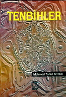

Medmed Zahid Kotku (Rh.A) Hazretlerinden Münebbihat Dersleri
TENBÝHLER
ÝÇÝNDEKÝLER
Önsöz
Mehmed Zahid KOTKU (Rh.A) Hazretleri
Ýkili Bab
1. Ders: 29. 7. 1979 / 1 Ramazan 1399
2. Ders: 30. 7. 1979 / 2 Ramazan 1399
3. Ders: 1. 8. 1979 / 4 Ramazan 1399
Üçlü Bab
4. Ders: 2. 8. 1979 / 5 Ramazan 1399
5. Ders: 3. 8. 1979 / 6 Ramazan 1399
6. Ders: 5. 10. 1974 / Ramazan 1394
7. Ders: 10. 8. 1979 / 13 Ramazan 1399
8. Ders: 6. 10. 1974 / Ramazan 1394
Dörtlü Bab
9. Ders: 7. 10. 1974 / Ramazan 1394
10. Ders: 8. 10. 1974 / Ramazan 1394
11. Ders: 8. 10. 1974 / Ramazan 1394
Beþli Bab
12. Ders: 9. 10. 1974 / Ramazan 1394
Onlu Bab
13. Ders: 26 Ramazan 1394 / Ekim 1974
14. Ders: 27 Ramazan 1394 / Ekim 1974
15. Ders: 28 Ramazan 1394 / Ekim 1974
16. Ders: 29 Ramazan 1394 / Ekim 1974
17. Ders: 29 Ramazan 1394 / Ekim 1974.
18. Ders: 30 Ramazan 1394 / Ekim 1974.